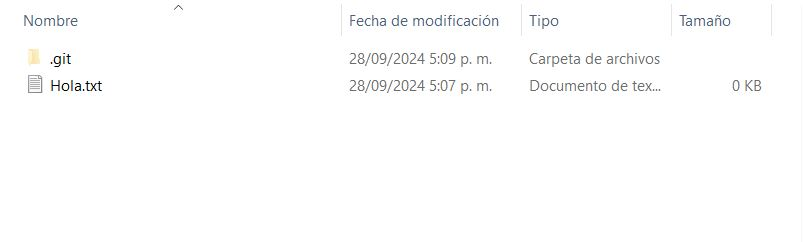
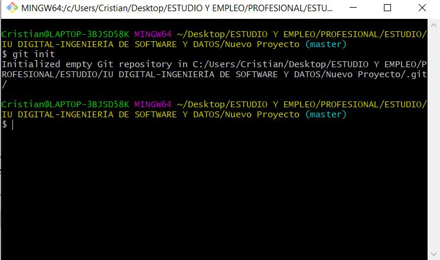
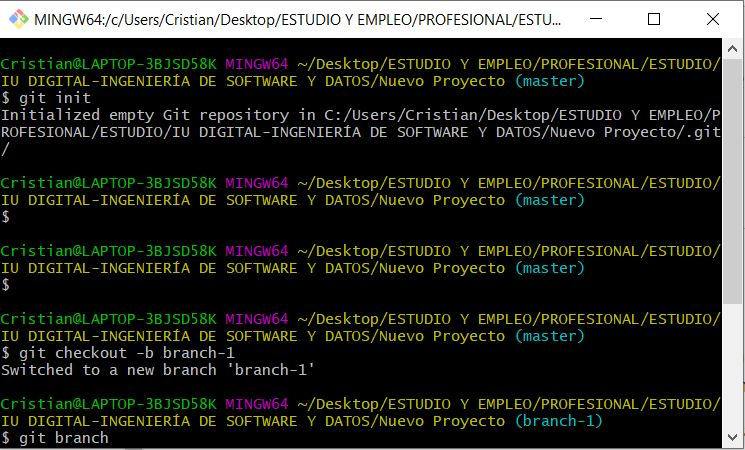
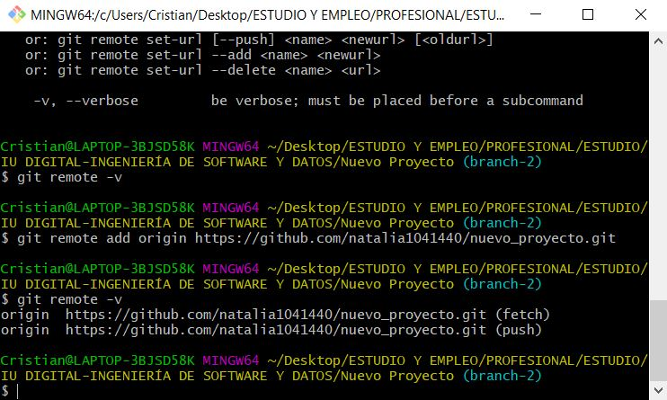
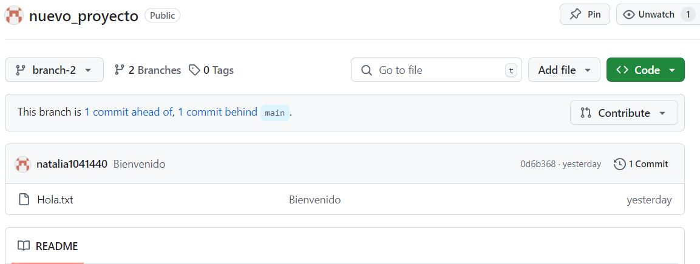

Descubriendo el Universo del Hardware: Innovación y Tecnología en Acción
Desde sus inicios, el hardware ha experimentado una transformación profunda. En los años 40 y 50, las primeras computadoras, con válvulas de vacío, eran colosales y poco eficientes. El transistor, inventado en 1947, revolucionó la tecnología al permitir la creación de circuitos integrados compactos y accesibles.
Con el tiempo, los microprocesadores hicieron posible las computadoras personales, cambiando para siempre la informática. Hoy, exploramos nuevas fronteras con computación cuántica, que utiliza qubits para superar las limitaciones de los sistemas clásicos, y nanotecnología, que permite la creación de componentes a escala molecular para dispositivos más potentes y eficientes.
El biohardware, que integra componentes biológicos en dispositivos electrónicos, ofrece avances como sensores biológicos innovadores. Materiales 2D como el grafeno están redefiniendo el diseño del hardware con su conductividad superior y flexibilidad. Además, el hardware autónomo está en desarrollo para crear dispositivos que se autoajustan y autoreparan, mejorando su longevidad y funcionalidad.
En esencia, la evolución del hardware ha pasado de máquinas voluminosas a soluciones tecnológicas avanzadas y adaptativas, marcando un continuo avance hacia un futuro tecnológico más innovador y dinámico.
Segunda Entrada de Blog - Tutorial de Git
1. Inicialización del Repositorio Local
-Para crear un repositorio local, sigue estos pasos:
-Abre la terminal (o línea de comandos)
-Navega a la ubicación donde quieres crear el proyecto.
-Crea una nueva carpeta.
-Entra en la carpeta.
-Dentro de esa carpeta, ejecuta.
Comandos:
 Propósito:
git init: Este comando crea un nuevo subdirectorio llamado .git, que contiene todos los archivos necesarios para el control de versiones. A partir de este momento, tu directorio será un repositorio Git.
2. Creación de Branches (Ramas)
Las ramas en Git te permiten trabajar en diferentes versiones de tu proyecto de manera aislada. Esto es útil para desarrollar nuevas características, corregir errores o experimentar sin afectar la rama principal (usualmente llamada main o master).
Comandos:
Propósito:
-git branch: lista las ramas creadas.
-git checkout -b nombreRama: Cambia a la rama especificada.
-git checkout nombreRama: Cambia a la rama especificada.
-git merge: Combina los cambios de la rama especificada con la rama actual.
3. Agregar un Repositorio Remoto
Para conectar tu repositorio local a uno remoto en GitHub, sigue estos pasos:
Instrucciones:
-git remote add origin urlRepositorioRemoto.
-Ve a GitHub y crea un nuevo repositorio.
-Conectar el repositorio local al remoto:
Comandos:
Propósito:
-git remote add origin: Este comando añade un repositorio remoto bajo el alias "origin".
-La URL debe ser la del repositorio que creaste en GitHub.
-git remote -v: Muestra los repositorios remotos asociados con tu repositorio local.
-Enviar tus cambios al repositorio remoto.
